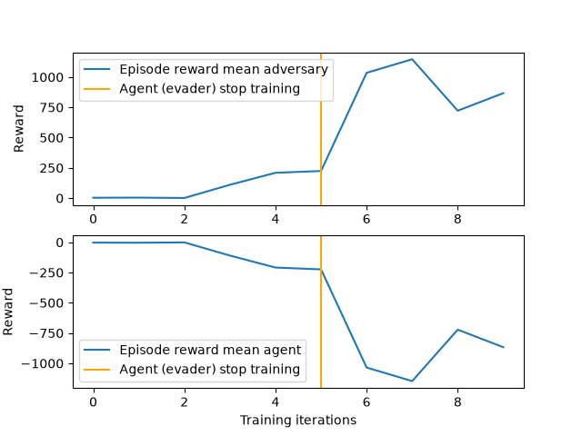

Note
Go to the end to download the full example code.
Competitive Multi-Agent Reinforcement Learning (DDPG) with TorchRL Tutorial#
Author: Matteo Bettini
See also
The BenchMARL library provides state-of-the-art implementations of MARL algorithms using TorchRL.
This tutorial demonstrates how to use PyTorch and TorchRL to solve a Competitive Multi-Agent Reinforcement Learning (MARL) problem.
For ease of use, this tutorial will follow the general structure of the already available Multi-Agent Reinforcement Learning (PPO) with TorchRL Tutorial.
In this tutorial, we will use the simple_tag environment from the MADDPG paper. This environment is part of a set called MultiAgentParticleEnvironments (MPE) introduced with the paper.
There are currently multiple simulators providing MPE environments. In this tutorial we show how to train this environment in TorchRL using either:
PettingZoo, in the traditional CPU version of the environment;
VMAS, which provides a vectorized implementation in PyTorch, able to simulate multiple environments on a GPU to speed up computation.

Multi-agent simple_tag scenario#
Key learnings:
How to use competitive multi-agent environments in TorchRL, how their specs work, and how they integrate with the library;
How to use Parallel PettingZoo and VMAS environments with multiple agent groups in TorchRL;
How to create different multi-agent network architectures in TorchRL (e.g., using parameter sharing, centralised critic)
How we can use
TensorDictto carry multi-agent multi-group data;How we can tie all the library components (collectors, modules, replay buffers, and losses) in an off-policy multi-agent MADDPG/IDDPG training loop.
If you are running this in Google Colab, make sure you install the following dependencies:
!pip3 install torchrl
!pip3 install vmas
!pip3 install pettingzoo[mpe]==1.24.3
!pip3 install tqdm
Deep Deterministic Policy Gradient (DDPG) is an off-policy actor-critic algorithm where a deterministic policy is optimised using the gradients from the critic network. For more information, see the Deep Deterministic Policy Gradients paper. This kind of algorithm is typically trained off-policy. For more info on off-policy learning see Sutton, Richard S., and Andrew G. Barto. Reinforcement learning: An introduction. MIT press, 2018.

Off-policy learning#
This approach has been extended to multi-agent learning in Multi-Agent Actor-Critic for Mixed Cooperative-Competitive Environments, which introduces the Multi Agent DDPG (MADDPG) algorithm. In multi-agent settings, things are a bit different. We now have multiple policies \(\mathbf{\pi}\), one for each agent. Policies are typically local and decentralised. This means that the policy for a single agent will output an action for that agent based only on its observation. In the MARL literature, this is referred to as decentralised execution. On the other hand, different formulations exist for the critic, mainly:
In MADDPG the critic is centralised and takes as input the global state and global action of the system. The global state can be a global observation or simply the concatenation of the agents’ observation. The global action is the concatenation of agent actions. MADDPG can be used in contexts where centralised training is performed as it needs access to global information.
In IDDPG, the critic takes as input just the observation and action of one agent. This allows decentralised training as both the critic and the policy will only need local information to compute their outputs.
Centralised critics help overcome the non-stationary of multiple agents learning concurrently, but, on the other hand, they may be impacted by their large input space. In this tutorial, we will be able to train both formulations, and we will also discuss how parameter-sharing (the practice of sharing the network parameters across the agents) impacts each.
The structure of this tutorial is as follows:
Initially, we will establish a set of hyperparameters for use.
Subsequently, we will construct a multi-agent environment, utilizing TorchRL’s wrapper for either PettingZoo or VMAS.
Following that, we will formulate the policy and critic networks, discussing the effects of various choices on parameter sharing and critic centralization.
Afterwards, we will create the sampling collector and the replay buffer.
In the end, we will execute our training loop and examine the outcomes.
If you are operating this in Colab or on a machine with a GUI, you will also have the opportunity to render and visualize your own trained policy before and after the training process.
Import our dependencies:
import copy
import tempfile
import torch
from matplotlib import pyplot as plt
from tensordict import TensorDictBase
from tensordict.nn import TensorDictModule, TensorDictSequential
from torch import multiprocessing
from torchrl.collectors import Collector
from torchrl.data import LazyMemmapStorage, RandomSampler, ReplayBuffer
from torchrl.envs import (
check_env_specs,
ExplorationType,
PettingZooEnv,
RewardSum,
set_exploration_type,
TransformedEnv,
VmasEnv,
)
from torchrl.modules import (
AdditiveGaussianModule,
MultiAgentMLP,
ProbabilisticActor,
TanhDelta,
)
from torchrl.objectives import DDPGLoss, SoftUpdate, ValueEstimators
from torchrl.record import CSVLogger, PixelRenderTransform, VideoRecorder
from tqdm import tqdm
# Check if we're building the doc, in which case disable video rendering
try:
is_sphinx = __sphinx_build__
except NameError:
is_sphinx = False
Define Hyperparameters#
We set the hyperparameters for our tutorial. Depending on the resources available, one may choose to execute the policy and the simulator on GPU or on another device. You can tune some of these values to adjust the computational requirements.
# Seed
seed = 0
torch.manual_seed(seed)
# Devices
is_fork = multiprocessing.get_start_method() == "fork"
device = (
torch.device(0)
if torch.cuda.is_available() and not is_fork
else torch.device("cpu")
)
# Sampling
frames_per_batch = 1_000 # Number of team frames collected per sampling iteration
n_iters = 10 # Number of sampling and training iterations
total_frames = frames_per_batch * n_iters
# We will stop training the evaders after this many iterations,
# should be 0 <= iteration_when_stop_training_evaders <= n_iters
iteration_when_stop_training_evaders = n_iters // 2
# Replay buffer
memory_size = 1_000_000 # The replay buffer of each group can store this many frames
# Training
n_optimiser_steps = 100 # Number of optimization steps per training iteration
train_batch_size = 128 # Number of frames trained in each optimiser step
lr = 3e-4 # Learning rate
max_grad_norm = 1.0 # Maximum norm for the gradients
# DDPG
gamma = 0.99 # Discount factor
polyak_tau = 0.005 # Tau for the soft-update of the target network
Environment#
Multi-agent environments simulate multiple agents interacting with the world. TorchRL API allows integrating various types of multi-agent environment flavors. In this tutorial we will focus on environments where multiple agent groups interact in parallel. That is: at every step all agents will get an observation and take an action synchronously.
Furthermore, the TorchRL MARL API allows to separate agents into groups. Each group will be a separate entry in the
tensordict. The data of agents within a group is stacked together. Therefore, by choosing how to group your agents,
you can decide which data is stacked/kept as separate entries.
The grouping strategy can be specified at construction in environments like VMAS and PettingZoo.
For more info on grouping, see MarlGroupMapType.
In the simple_tag environment there are two teams of agents: the chasers (or “adversaries”) (red circles) and the evaders (or “agents”) (green circles). Chasers are rewarded for touching evaders (+10). Upon a contact the team of chasers is collectively rewarded and the evader touched is penalized with the same value (-10). Evaders have higher speed and acceleration than chasers. In the environment there are also obstacles (black circles). Agents and obstacles are spawned according to a uniform random distribution. Agents act in a 2D continuous world with drag and elastic collisions. Their actions are 2D continuous forces which determine their acceleration. Each agent observes its position, velocity, relative positions to all other agents and obstacles, and velocities of evaders.
The PettingZoo and VMAS versions differ slightly in the reward functions as PettingZoo penalizes evaders for going out-of-bounds, while VMAS impedes it physically. This is the reason why you will observe that in VMAS the rewards of the two teams are identical, just with opposite sign, while in PettingZoo the evaders will have lower rewards.
We will now instantiate the environment.
For this tutorial, we will limit the episodes to max_steps, after which the terminated flag is set. This is
functionality is already provided in the PettingZoo and VMAS simulators but the TorchRL StepCounter
transform could alternatively be used.
max_steps = 100 # Environment steps before done
n_chasers = 2
n_evaders = 1
n_obstacles = 2
use_vmas = True # Set this to True for a great performance speedup
if not use_vmas:
base_env = PettingZooEnv(
task="simple_tag_v3",
parallel=True, # Use the Parallel version
seed=seed,
# Scenario specific
continuous_actions=True,
num_good=n_evaders,
num_adversaries=n_chasers,
num_obstacles=n_obstacles,
max_cycles=max_steps,
)
else:
num_vmas_envs = (
frames_per_batch // max_steps
) # Number of vectorized environments. frames_per_batch collection will be divided among these environments
base_env = VmasEnv(
scenario="simple_tag",
num_envs=num_vmas_envs,
continuous_actions=True,
max_steps=max_steps,
device=device,
seed=seed,
# Scenario specific
num_good_agents=n_evaders,
num_adversaries=n_chasers,
num_landmarks=n_obstacles,
)
Group map#
PettingZoo and VMAS environments use the TorchRL MARL grouping API. We can access the group map, mapping each group to the agents in it, as follows:
print(f"group_map: {base_env.group_map}")
group_map: {'adversary': ['adversary_0', 'adversary_1'], 'agent': ['agent_0']}
as we can see it contains 2 groups: “agents” (evaders) and “adversaries” (chasers).
The environment is not only defined by its simulator and transforms, but also by a series of metadata that describe what can be expected during its execution. For efficiency purposes, TorchRL is quite stringent when it comes to environment specs, but you can easily check that your environment specs are adequate. In our example, the simulator wrapper takes care of setting the proper specs for your base_env, so you should not have to care about this.
There are four specs to look at:
action_specdefines the action space;reward_specdefines the reward domain;done_specdefines the done domain;observation_specwhich defines the domain of all other outputs from environment steps;
print("action_spec:", base_env.full_action_spec)
print("reward_spec:", base_env.full_reward_spec)
print("done_spec:", base_env.full_done_spec)
print("observation_spec:", base_env.observation_spec)
action_spec: Composite(
adversary: Composite(
action: BoundedContinuous(
shape=torch.Size([10, 2, 2]),
space=ContinuousBox(
low=Tensor(shape=torch.Size([10, 2, 2]), device=cpu, dtype=torch.float32, contiguous=True),
high=Tensor(shape=torch.Size([10, 2, 2]), device=cpu, dtype=torch.float32, contiguous=True)),
device=cpu,
dtype=torch.float32,
domain=continuous),
device=cpu,
shape=torch.Size([10, 2]),
data_cls=None),
agent: Composite(
action: BoundedContinuous(
shape=torch.Size([10, 1, 2]),
space=ContinuousBox(
low=Tensor(shape=torch.Size([10, 1, 2]), device=cpu, dtype=torch.float32, contiguous=True),
high=Tensor(shape=torch.Size([10, 1, 2]), device=cpu, dtype=torch.float32, contiguous=True)),
device=cpu,
dtype=torch.float32,
domain=continuous),
device=cpu,
shape=torch.Size([10, 1]),
data_cls=None),
device=cpu,
shape=torch.Size([10]),
data_cls=None)
reward_spec: Composite(
adversary: Composite(
reward: UnboundedContinuous(
shape=torch.Size([10, 2, 1]),
space=ContinuousBox(
low=Tensor(shape=torch.Size([10, 2, 1]), device=cpu, dtype=torch.float32, contiguous=True),
high=Tensor(shape=torch.Size([10, 2, 1]), device=cpu, dtype=torch.float32, contiguous=True)),
device=cpu,
dtype=torch.float32,
domain=continuous),
device=cpu,
shape=torch.Size([10, 2]),
data_cls=None),
agent: Composite(
reward: UnboundedContinuous(
shape=torch.Size([10, 1, 1]),
space=ContinuousBox(
low=Tensor(shape=torch.Size([10, 1, 1]), device=cpu, dtype=torch.float32, contiguous=True),
high=Tensor(shape=torch.Size([10, 1, 1]), device=cpu, dtype=torch.float32, contiguous=True)),
device=cpu,
dtype=torch.float32,
domain=continuous),
device=cpu,
shape=torch.Size([10, 1]),
data_cls=None),
device=cpu,
shape=torch.Size([10]),
data_cls=None)
done_spec: Composite(
done: Categorical(
shape=torch.Size([10, 1]),
space=CategoricalBox(n=2),
device=cpu,
dtype=torch.bool,
domain=discrete),
terminated: Categorical(
shape=torch.Size([10, 1]),
space=CategoricalBox(n=2),
device=cpu,
dtype=torch.bool,
domain=discrete),
device=cpu,
shape=torch.Size([10]),
data_cls=None)
observation_spec: Composite(
adversary: Composite(
observation: UnboundedContinuous(
shape=torch.Size([10, 2, 14]),
space=ContinuousBox(
low=Tensor(shape=torch.Size([10, 2, 14]), device=cpu, dtype=torch.float32, contiguous=True),
high=Tensor(shape=torch.Size([10, 2, 14]), device=cpu, dtype=torch.float32, contiguous=True)),
device=cpu,
dtype=torch.float32,
domain=continuous),
device=cpu,
shape=torch.Size([10, 2]),
data_cls=None),
agent: Composite(
observation: UnboundedContinuous(
shape=torch.Size([10, 1, 12]),
space=ContinuousBox(
low=Tensor(shape=torch.Size([10, 1, 12]), device=cpu, dtype=torch.float32, contiguous=True),
high=Tensor(shape=torch.Size([10, 1, 12]), device=cpu, dtype=torch.float32, contiguous=True)),
device=cpu,
dtype=torch.float32,
domain=continuous),
device=cpu,
shape=torch.Size([10, 1]),
data_cls=None),
device=cpu,
shape=torch.Size([10]),
data_cls=None)
Using the commands just shown we can access the domain of each value.
We can see that all specs are structured as a dictionary, with the root always containing the group names.
This structure will be followed in all tensordict data coming and going to the environment.
Furthermore, the specs of each group have leading shape (n_agents_in_that_group) (1 for agents, 2 for adversaries),
meaning that the tensor data of that group will always have that leading shape (agents within a group have the data stacked).
Looking at the done_spec, we can see that there are some keys that are outside of agent groups
("done", "terminated", "truncated"), which do not have a leading multi-agent dimension.
These keys are shared by all agents and represent the environment global done state used for resetting.
By default, like in this case, parallel PettingZoo environments are done when any agent is done, but this behavior
can be overridden by setting done_on_any at PettingZoo environment construction.
To quickly access the keys for each of these values in tensordicts, we can simply ask the environment for the respective keys, and we will immediately understand which are per-agent and which shared. This info will be useful in order to tell all other TorchRL components where to find each value
print("action_keys:", base_env.action_keys)
print("reward_keys:", base_env.reward_keys)
print("done_keys:", base_env.done_keys)
action_keys: [('adversary', 'action'), ('agent', 'action')]
reward_keys: [('adversary', 'reward'), ('agent', 'reward')]
done_keys: ['done', 'terminated']
Transforms#
We can append any TorchRL transform we need to our environment. These will modify its input/output in some desired way. We stress that, in multi-agent contexts, it is paramount to provide explicitly the keys to modify.
For example, in this case, we will instantiate a RewardSum transform which will sum rewards over the episode.
We will tell this transform where to find the reset keys for each reward key.
Essentially we just say that the
episode reward of each group should be reset when the "_reset" tensordict key is set, meaning that env.reset()
was called.
The transformed environment will inherit
the device and meta-data of the wrapped environment, and transform these depending on the sequence
of transforms it contains.
env = TransformedEnv(
base_env,
RewardSum(
in_keys=base_env.reward_keys,
reset_keys=["_reset"] * len(base_env.group_map.keys()),
),
)
the check_env_specs() function runs a small rollout and compares its output against the environment
specs. If no error is raised, we can be confident that the specs are properly defined:
check_env_specs(env)
Rollout#
For fun, let us see what a simple random rollout looks like. You can call env.rollout(n_steps) and get an overview of what the environment inputs and outputs look like. Actions will automatically be drawn at random from the action spec domain.
n_rollout_steps = 5
rollout = env.rollout(n_rollout_steps)
print(f"rollout of {n_rollout_steps} steps:", rollout)
print("Shape of the rollout TensorDict:", rollout.batch_size)
rollout of 5 steps: TensorDict(
fields={
adversary: TensorDict(
fields={
action: Tensor(shape=torch.Size([10, 5, 2, 2]), device=cpu, dtype=torch.float32, is_shared=False),
episode_reward: Tensor(shape=torch.Size([10, 5, 2, 1]), device=cpu, dtype=torch.float32, is_shared=False),
observation: Tensor(shape=torch.Size([10, 5, 2, 14]), device=cpu, dtype=torch.float32, is_shared=False)},
batch_size=torch.Size([10, 5, 2]),
device=cpu,
is_shared=False),
agent: TensorDict(
fields={
action: Tensor(shape=torch.Size([10, 5, 1, 2]), device=cpu, dtype=torch.float32, is_shared=False),
episode_reward: Tensor(shape=torch.Size([10, 5, 1, 1]), device=cpu, dtype=torch.float32, is_shared=False),
observation: Tensor(shape=torch.Size([10, 5, 1, 12]), device=cpu, dtype=torch.float32, is_shared=False)},
batch_size=torch.Size([10, 5, 1]),
device=cpu,
is_shared=False),
done: Tensor(shape=torch.Size([10, 5, 1]), device=cpu, dtype=torch.bool, is_shared=False),
next: TensorDict(
fields={
adversary: TensorDict(
fields={
episode_reward: Tensor(shape=torch.Size([10, 5, 2, 1]), device=cpu, dtype=torch.float32, is_shared=False),
observation: Tensor(shape=torch.Size([10, 5, 2, 14]), device=cpu, dtype=torch.float32, is_shared=False),
reward: Tensor(shape=torch.Size([10, 5, 2, 1]), device=cpu, dtype=torch.float32, is_shared=False)},
batch_size=torch.Size([10, 5, 2]),
device=cpu,
is_shared=False),
agent: TensorDict(
fields={
episode_reward: Tensor(shape=torch.Size([10, 5, 1, 1]), device=cpu, dtype=torch.float32, is_shared=False),
observation: Tensor(shape=torch.Size([10, 5, 1, 12]), device=cpu, dtype=torch.float32, is_shared=False),
reward: Tensor(shape=torch.Size([10, 5, 1, 1]), device=cpu, dtype=torch.float32, is_shared=False)},
batch_size=torch.Size([10, 5, 1]),
device=cpu,
is_shared=False),
done: Tensor(shape=torch.Size([10, 5, 1]), device=cpu, dtype=torch.bool, is_shared=False),
terminated: Tensor(shape=torch.Size([10, 5, 1]), device=cpu, dtype=torch.bool, is_shared=False)},
batch_size=torch.Size([10, 5]),
device=cpu,
is_shared=False),
terminated: Tensor(shape=torch.Size([10, 5, 1]), device=cpu, dtype=torch.bool, is_shared=False)},
batch_size=torch.Size([10, 5]),
device=cpu,
is_shared=False)
Shape of the rollout TensorDict: torch.Size([10, 5])
We can see that our rollout has batch_size of (n_rollout_steps).
This means that all the tensors in it will have this leading dimension.
Looking more in depth, we can see that the output tensordict can be divided in the following way:
In the root (accessible by running
rollout.exclude("next")) we will find all the keys that are available after a reset is called at the first timestep. We can see their evolution through the rollout steps by indexing then_rollout_stepsdimension. Among these keys, we will find the ones that are different for each agent in therollout[group_name]tensordicts, which will have batch size(n_rollout_steps, n_agents_in_group)signifying that it is storing the additional agent dimension. The ones outside the group tensordicts will be the shared ones.In the next (accessible by running
rollout.get("next")). We will find the same structure as the root with some minor differences highlighted below.
In TorchRL the convention is that done and observations will be present in both root and next (as these are available both at reset time and after a step). Action will only be available in root (as there is no action resulting from a step) and reward will only be available in next (as there is no reward at reset time). This structure follows the one in Reinforcement Learning: An Introduction (Sutton and Barto) where root represents data at time \(t\) and next represents data at time \(t+1\) of a world step.
Render a random rollout#
If you are on Google Colab, or on a machine with OpenGL and a GUI, you can actually render a random rollout. This will give you an idea of what a random policy will achieve in this task, in order to compare it with the policy you will train yourself!
To render a rollout, follow the instructions in the Render section at the end of this tutorial
and just remove the line policy=agents_exploration_policy from env.rollout().
Policy#
DDPG utilises a deterministic policy. This means that our neural network will output the action to take. As the action is continuous, we use a Tanh-Delta distribution to respect the action space boundaries. The only thing that this class does is apply a Tanh transformation to make sure the action is within the domain bounds.
Another important decision we need to make is whether we want the agents within a team to share the policy parameters. On the one hand, sharing parameters means that they will all share the same policy, which will allow them to benefit from each other’s experiences. This will also result in faster training. On the other hand, it will make them behaviorally homogeneous, as they will in fact share the same model. For this example, we will enable sharing as we do not mind the homogeneity and can benefit from the computational speed, but it is important to always think about this decision in your own problems!
We design the policy in three steps.
First: define a neural network n_obs_per_agent -> n_actions_per_agents
For this we use the MultiAgentMLP, a TorchRL module made exactly for
multiple agents, with much customization available.
We will define a different policy for each group and store them in a dictionary.
policy_modules = {}
for group, agents in env.group_map.items():
share_parameters_policy = True # Can change this based on the group
policy_net = MultiAgentMLP(
n_agent_inputs=env.observation_spec[group, "observation"].shape[
-1
], # n_obs_per_agent
n_agent_outputs=env.full_action_spec[group, "action"].shape[
-1
], # n_actions_per_agents
n_agents=len(agents), # Number of agents in the group
centralised=False, # the policies are decentralised (i.e., each agent will act from its local observation)
share_params=share_parameters_policy,
device=device,
depth=2,
num_cells=256,
activation_class=torch.nn.Tanh,
)
# Wrap the neural network in a :class:`~tensordict.nn.TensorDictModule`.
# This is simply a module that will read the ``in_keys`` from a tensordict, feed them to the
# neural networks, and write the
# outputs in-place at the ``out_keys``.
policy_module = TensorDictModule(
policy_net,
in_keys=[(group, "observation")],
out_keys=[(group, "param")],
) # We just name the input and output that the network will read and write to the input tensordict
policy_modules[group] = policy_module
Second: wrap the TensorDictModule in a ProbabilisticActor
We now need to build the TanhDelta distribution.
We instruct the ProbabilisticActor
class to build a TanhDelta out of the policy action
parameters. We also provide the minimum and maximum values of this
distribution, which we gather from the environment specs.
The name of the in_keys (and hence the name of the out_keys from
the TensorDictModule above) has to end with the
TanhDelta distribution constructor keyword arguments (param).
policies = {}
for group, _agents in env.group_map.items():
policy = ProbabilisticActor(
module=policy_modules[group],
spec=env.full_action_spec[group, "action"],
in_keys=[(group, "param")],
out_keys=[(group, "action")],
distribution_class=TanhDelta,
distribution_kwargs={
"low": env.full_action_spec_unbatched[group, "action"].space.low,
"high": env.full_action_spec_unbatched[group, "action"].space.high,
},
return_log_prob=False,
)
policies[group] = policy
Third: Exploration
Since the DDPG policy is deterministic, we need a way to perform exploration during collection.
For this purpose, we need to append an exploration layer to our policies before passing them to the collector.
In this case we use a AdditiveGaussianModule, which adds gaussian noise to our action
(and clamps it if the noise makes the action out of bounds).
This exploration wrapper uses a sigma parameter which is multiplied by the noise to determine its magnitude.
Sigma can be annealed throughout training to reduce exploration.
Sigma will go from sigma_init to sigma_end in annealing_num_steps.
exploration_policies = {}
for group, _agents in env.group_map.items():
exploration_policy = TensorDictSequential(
policies[group],
AdditiveGaussianModule(
spec=policies[group].spec,
annealing_num_steps=total_frames
// 2, # Number of frames after which sigma is sigma_end
action_key=(group, "action"),
sigma_init=0.9, # Initial value of the sigma
sigma_end=0.1, # Final value of the sigma
),
)
exploration_policies[group] = exploration_policy
Critic network#
The critic network is a crucial component of the DDPG algorithm, even though it isn’t used at sampling time. This module will read the observations & actions taken and return the corresponding value estimates.
As before, one should think carefully about the decision of sharing the critic parameters within an agent group. In general, parameter sharing will grant faster training convergence, but there are a few important considerations to be made:
Sharing is not recommended when agents have different reward functions, as the critics will need to learn to assign different values to the same state (e.g., in mixed cooperative-competitive settings). In this case, since the two groups are already using separate networks, the sharing decision only applies for agents within a group, which we already know have the same reward function.
In decentralised training settings, sharing cannot be performed without additional infrastructure to synchronise parameters.
In all other cases where the reward function (to be differentiated from the reward) is the same for all agents in a group (as in the current scenario), sharing can provide improved performance. This can come at the cost of homogeneity in the agent strategies. In general, the best way to know which choice is preferable is to quickly experiment both options.
Here is also where we have to choose between MADDPG and IDDPG:
With MADDPG, we will obtain a central critic with full-observability (i.e., it will take all the concatenated global agent observations and actions as input). We can do this because we are in a simulator and training is centralised.
With IDDPG, we will have a local decentralised critic, just like the policy.
In any case, the critic output will have shape (..., n_agents_in_group, 1).
If the critic is centralised and shared,
all the values along the n_agents_in_group dimension will be identical.
As with the policy, we create a critic network for each group and store them in a dictionary.
critics = {}
for group, agents in env.group_map.items():
share_parameters_critic = True # Can change for each group
MADDPG = True # IDDPG if False, can change for each group
# This module applies the lambda function: reading the action and observation entries for the group
# and concatenating them in a new ``(group, "obs_action")`` entry
cat_module = TensorDictModule(
lambda obs, action: torch.cat([obs, action], dim=-1),
in_keys=[(group, "observation"), (group, "action")],
out_keys=[(group, "obs_action")],
)
critic_module = TensorDictModule(
module=MultiAgentMLP(
n_agent_inputs=env.observation_spec[group, "observation"].shape[-1]
+ env.full_action_spec[group, "action"].shape[-1],
n_agent_outputs=1, # 1 value per agent
n_agents=len(agents),
centralised=MADDPG,
share_params=share_parameters_critic,
device=device,
depth=2,
num_cells=256,
activation_class=torch.nn.Tanh,
),
in_keys=[(group, "obs_action")], # Read ``(group, "obs_action")``
out_keys=[
(group, "state_action_value")
], # Write ``(group, "state_action_value")``
)
critics[group] = TensorDictSequential(
cat_module, critic_module
) # Run them in sequence
Let us try our policy and critic modules. As pointed earlier, the usage of
TensorDictModule makes it possible to directly read the output
of the environment to run these modules, as they know what information to read
and where to write it.
We can see that after each group’s networks are run their output keys are added to the data under the group entry.
From this point on, the multi-agent-specific components have been instantiated, and we will simply use the same components as in single-agent learning. Isn’t this fantastic?
Running value and policy for group 'adversary': TensorDict(
fields={
adversary: TensorDict(
fields={
action: Tensor(shape=torch.Size([10, 2, 2]), device=cpu, dtype=torch.float32, is_shared=False),
episode_reward: Tensor(shape=torch.Size([10, 2, 1]), device=cpu, dtype=torch.float32, is_shared=False),
obs_action: Tensor(shape=torch.Size([10, 2, 16]), device=cpu, dtype=torch.float32, is_shared=False),
observation: Tensor(shape=torch.Size([10, 2, 14]), device=cpu, dtype=torch.float32, is_shared=False),
param: Tensor(shape=torch.Size([10, 2, 2]), device=cpu, dtype=torch.float32, is_shared=False),
state_action_value: Tensor(shape=torch.Size([10, 2, 1]), device=cpu, dtype=torch.float32, is_shared=False)},
batch_size=torch.Size([10, 2]),
device=cpu,
is_shared=False),
agent: TensorDict(
fields={
episode_reward: Tensor(shape=torch.Size([10, 1, 1]), device=cpu, dtype=torch.float32, is_shared=False),
observation: Tensor(shape=torch.Size([10, 1, 12]), device=cpu, dtype=torch.float32, is_shared=False)},
batch_size=torch.Size([10, 1]),
device=cpu,
is_shared=False),
done: Tensor(shape=torch.Size([10, 1]), device=cpu, dtype=torch.bool, is_shared=False),
terminated: Tensor(shape=torch.Size([10, 1]), device=cpu, dtype=torch.bool, is_shared=False)},
batch_size=torch.Size([10]),
device=cpu,
is_shared=False)
Running value and policy for group 'agent': TensorDict(
fields={
adversary: TensorDict(
fields={
action: Tensor(shape=torch.Size([10, 2, 2]), device=cpu, dtype=torch.float32, is_shared=False),
episode_reward: Tensor(shape=torch.Size([10, 2, 1]), device=cpu, dtype=torch.float32, is_shared=False),
obs_action: Tensor(shape=torch.Size([10, 2, 16]), device=cpu, dtype=torch.float32, is_shared=False),
observation: Tensor(shape=torch.Size([10, 2, 14]), device=cpu, dtype=torch.float32, is_shared=False),
param: Tensor(shape=torch.Size([10, 2, 2]), device=cpu, dtype=torch.float32, is_shared=False),
state_action_value: Tensor(shape=torch.Size([10, 2, 1]), device=cpu, dtype=torch.float32, is_shared=False)},
batch_size=torch.Size([10, 2]),
device=cpu,
is_shared=False),
agent: TensorDict(
fields={
action: Tensor(shape=torch.Size([10, 1, 2]), device=cpu, dtype=torch.float32, is_shared=False),
episode_reward: Tensor(shape=torch.Size([10, 1, 1]), device=cpu, dtype=torch.float32, is_shared=False),
obs_action: Tensor(shape=torch.Size([10, 1, 14]), device=cpu, dtype=torch.float32, is_shared=False),
observation: Tensor(shape=torch.Size([10, 1, 12]), device=cpu, dtype=torch.float32, is_shared=False),
param: Tensor(shape=torch.Size([10, 1, 2]), device=cpu, dtype=torch.float32, is_shared=False),
state_action_value: Tensor(shape=torch.Size([10, 1, 1]), device=cpu, dtype=torch.float32, is_shared=False)},
batch_size=torch.Size([10, 1]),
device=cpu,
is_shared=False),
done: Tensor(shape=torch.Size([10, 1]), device=cpu, dtype=torch.bool, is_shared=False),
terminated: Tensor(shape=torch.Size([10, 1]), device=cpu, dtype=torch.bool, is_shared=False)},
batch_size=torch.Size([10]),
device=cpu,
is_shared=False)
Data collector#
TorchRL provides a set of data collector classes. Briefly, these classes execute three operations: reset an environment, compute an action using the policy and the latest observation, execute a step in the environment, and repeat the last two steps until the environment signals a stop (or reaches a done state).
We will use the simplest possible data collector, which has the same output as an environment rollout, with the only difference that it will auto reset done states until the desired frames are collected.
We need to feed it our exploration policies. Furthermore, to run the policies from all groups as if they were one, we put them in a sequence. They will not interfere with each other as each group writes and reads keys in different places.
# Put exploration policies from each group in a sequence
agents_exploration_policy = TensorDictSequential(*exploration_policies.values())
collector = Collector(
env,
agents_exploration_policy,
device=device,
frames_per_batch=frames_per_batch,
total_frames=total_frames,
)
Replay buffer#
Replay buffers are a common building piece of off-policy RL algorithms. There are many types of buffers, in this tutorial we use a basic buffer to store and sample tensordict data randomly.
This buffer uses LazyMemmapStorage, which stores data on disk.
This allows to use the disk memory, but can result in slower sampling as it requires data to be cast to the training device.
To store your buffer on the GPU, you can use LazyTensorStorage, passing the desired device.
This will result in faster sampling but is subject to the memory constraints of the selected device.
replay_buffers = {}
scratch_dirs = []
for group, _agents in env.group_map.items():
scratch_dir = tempfile.TemporaryDirectory().name
scratch_dirs.append(scratch_dir)
replay_buffer = ReplayBuffer(
storage=LazyMemmapStorage(
memory_size,
scratch_dir=scratch_dir,
), # We will store up to memory_size multi-agent transitions
sampler=RandomSampler(),
batch_size=train_batch_size, # We will sample batches of this size
)
if device.type != "cpu":
replay_buffer.append_transform(lambda x: x.to(device))
replay_buffers[group] = replay_buffer
Loss function#
The DDPG loss can be directly imported from TorchRL for convenience using the
DDPGLoss class. This is the easiest way of utilising DDPG:
it hides away the mathematical operations of DDPG and the control flow that
goes with it.
It is also possible to have different policies for each group.
losses = {}
for group, _agents in env.group_map.items():
loss_module = DDPGLoss(
actor_network=policies[group], # Use the non-explorative policies
value_network=critics[group],
delay_value=True, # Whether to use a target network for the value
loss_function="l2",
)
loss_module.set_keys(
state_action_value=(group, "state_action_value"),
reward=(group, "reward"),
done=(group, "done"),
terminated=(group, "terminated"),
)
loss_module.make_value_estimator(ValueEstimators.TD0, gamma=gamma)
losses[group] = loss_module
target_updaters = {
group: SoftUpdate(loss, tau=polyak_tau) for group, loss in losses.items()
}
optimisers = {
group: {
"loss_actor": torch.optim.Adam(
loss.actor_network_params.flatten_keys().values(), lr=lr
),
"loss_value": torch.optim.Adam(
loss.value_network_params.flatten_keys().values(), lr=lr
),
}
for group, loss in losses.items()
}
Training utils#
We do have to define two helper functions that we will use in the training loop. They are very simple and do not contain any important logic.
def process_batch(batch: TensorDictBase) -> TensorDictBase:
"""
If the `(group, "terminated")` and `(group, "done")` keys are not present, create them by expanding
`"terminated"` and `"done"`.
This is needed to present them with the same shape as the reward to the loss.
"""
for group in env.group_map.keys():
keys = list(batch.keys(True, True))
group_shape = batch.get_item_shape(group)
nested_done_key = ("next", group, "done")
nested_terminated_key = ("next", group, "terminated")
if nested_done_key not in keys:
batch.set(
nested_done_key,
batch.get(("next", "done")).unsqueeze(-1).expand((*group_shape, 1)),
)
if nested_terminated_key not in keys:
batch.set(
nested_terminated_key,
batch.get(("next", "terminated"))
.unsqueeze(-1)
.expand((*group_shape, 1)),
)
return batch
Training loop#
We now have all the pieces needed to code our training loop. The steps include:
- Collect data for all groups
- Loop over groups
Store group data in group buffer
- Loop over epochs
Sample from group buffer
Compute loss on sampled data
Back propagate loss
Optimise
Repeat
Repeat
Repeat
pbar = tqdm(
total=n_iters,
desc=", ".join(
[f"episode_reward_mean_{group} = 0" for group in env.group_map.keys()]
),
)
episode_reward_mean_map = {group: [] for group in env.group_map.keys()}
train_group_map = copy.deepcopy(env.group_map)
# Training/collection iterations
for iteration, batch in enumerate(collector):
current_frames = batch.numel()
batch = process_batch(batch) # Util to expand done keys if needed
# Loop over groups
for group in train_group_map.keys():
group_batch = batch.exclude(
*[
key
for _group in env.group_map.keys()
if _group != group
for key in [_group, ("next", _group)]
]
) # Exclude data from other groups
group_batch = group_batch.reshape(
-1
) # This just affects the leading dimensions in batch_size of the tensordict
replay_buffers[group].extend(group_batch)
for _ in range(n_optimiser_steps):
subdata = replay_buffers[group].sample()
loss_vals = losses[group](subdata)
for loss_name in ["loss_actor", "loss_value"]:
loss = loss_vals[loss_name]
optimiser = optimisers[group][loss_name]
loss.backward()
# Optional
params = optimiser.param_groups[0]["params"]
torch.nn.utils.clip_grad_norm_(params, max_grad_norm)
optimiser.step()
optimiser.zero_grad()
# Soft-update the target network
target_updaters[group].step()
# Exploration sigma anneal update
exploration_policies[group][-1].step(current_frames)
# Stop training a certain group when a condition is met (e.g., number of training iterations)
if iteration == iteration_when_stop_training_evaders:
del train_group_map["agent"]
# Logging
for group in env.group_map.keys():
episode_reward_mean = (
batch.get(("next", group, "episode_reward"))[
batch.get(("next", group, "done"))
]
.mean()
.item()
)
episode_reward_mean_map[group].append(episode_reward_mean)
pbar.set_description(
", ".join(
[
f"episode_reward_mean_{group} = {episode_reward_mean_map[group][-1]}"
for group in env.group_map.keys()
]
),
refresh=False,
)
pbar.update()
episode_reward_mean_adversary = 0, episode_reward_mean_agent = 0: 0%| | 0/10 [00:00<?, ?it/s]
episode_reward_mean_adversary = 3.0, episode_reward_mean_agent = -3.0: 10%|█ | 1/10 [00:02<00:26, 2.98s/it]
episode_reward_mean_adversary = 4.0, episode_reward_mean_agent = -4.0: 20%|██ | 2/10 [00:06<00:24, 3.01s/it]
episode_reward_mean_adversary = 1.0, episode_reward_mean_agent = -1.0: 30%|███ | 3/10 [00:09<00:21, 3.03s/it]
episode_reward_mean_adversary = 110.0, episode_reward_mean_agent = -110.0: 40%|████ | 4/10 [00:12<00:18, 3.06s/it]
episode_reward_mean_adversary = 209.0, episode_reward_mean_agent = -209.0: 50%|█████ | 5/10 [00:15<00:15, 3.07s/it]
episode_reward_mean_adversary = 224.0, episode_reward_mean_agent = -224.0: 60%|██████ | 6/10 [00:18<00:12, 3.08s/it]
episode_reward_mean_adversary = 1035.0, episode_reward_mean_agent = -1035.0: 70%|███████ | 7/10 [00:20<00:08, 2.81s/it]
episode_reward_mean_adversary = 1147.0, episode_reward_mean_agent = -1147.0: 80%|████████ | 8/10 [00:22<00:05, 2.64s/it]
episode_reward_mean_adversary = 722.0, episode_reward_mean_agent = -722.0: 90%|█████████ | 9/10 [00:25<00:02, 2.53s/it]
episode_reward_mean_adversary = 867.0, episode_reward_mean_agent = -867.0: 100%|██████████| 10/10 [00:27<00:00, 2.47s/it]
Results#
We can plot the mean reward obtained per episode.
To make training last longer, increase the n_iters hyperparameter.
When running this script locally, you may need to close the opened window to proceed with the rest of the screen.
fig, axs = plt.subplots(2, 1)
for i, group in enumerate(env.group_map.keys()):
axs[i].plot(episode_reward_mean_map[group], label=f"Episode reward mean {group}")
axs[i].set_ylabel("Reward")
axs[i].axvline(
x=iteration_when_stop_training_evaders,
label="Agent (evader) stop training",
color="orange",
)
axs[i].legend()
axs[-1].set_xlabel("Training iterations")
plt.show()

Render#
Rendering instruction are for VMAS, aka when running with use_vmas=True.
TorchRL offers some utils to record and save rendered videos. You can learn more about these tools here.
In the following code-block, we append a transform that will call the render() method from the VMAS
wrapped environment and save the stack of frames to a mp4 file which location is determined by the custom
logger video_logger. Note that this code may require some external dependencies such as torchvision.
if use_vmas and not is_sphinx:
# Replace tmpdir with any desired path where the video should be saved
with tempfile.TemporaryDirectory() as tmpdir:
video_logger = CSVLogger("vmas_logs", tmpdir, video_format="mp4")
print("Creating rendering env")
env_with_render = TransformedEnv(env.base_env, env.transform.clone())
env_with_render = env_with_render.append_transform(
PixelRenderTransform(
out_keys=["pixels"],
# the np.ndarray has a negative stride and needs to be copied before being cast to a tensor
preproc=lambda x: x.copy(),
as_non_tensor=True,
# asking for array rather than on-screen rendering
mode="rgb_array",
)
)
env_with_render = env_with_render.append_transform(
VideoRecorder(logger=video_logger, tag="vmas_rendered")
)
with set_exploration_type(ExplorationType.DETERMINISTIC):
print("Rendering rollout...")
env_with_render.rollout(100, policy=agents_exploration_policy)
print("Saving the video...")
env_with_render.transform.dump()
print("Saved! Saved directory tree:")
video_logger.print_log_dir()
Conclusion and next steps#
In this tutorial, we have seen:
How to create a competitive multi-group multi-agent environment in TorchRL, how its specs work, and how it integrates with the library;
How to create multi-agent network architectures in TorchRL for multiple groups;
How we can use
tensordict.TensorDictto carry multi-agent multi-group data;How we can tie all the library components (collectors, modules, replay buffers, and losses) in a multi-agent multi-group MADDPG/IDDPG training loop.
Now that you are proficient with multi-agent DDPG, you can check out all the TorchRL multi-agent implementations in the GitHub repository. These are code-only scripts of many MARL algorithms such as the ones seen in this tutorial, QMIX, MADDPG, IQL, and many more!
Also do remember to check out our tutorial: Multi-Agent Reinforcement Learning (PPO) with TorchRL Tutorial.
Finally, you can modify the parameters of this tutorial to try many other configurations and scenarios to become a MARL master.
PettingZoo and VMAS contain many more scenarios. Here are a few videos of some possible scenarios you can try in VMAS.

Total running time of the script: (0 minutes 27.790 seconds)